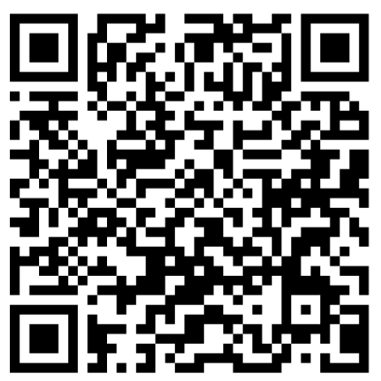

profil
- 35 ans
- 06 01 83 95 32
- 23 ter rue du moulin Moreau 37390 Charentilly
- tristanqr@gmail.com
- Permis B
langues
- Anglais Très bon niveau – séjour linguistique en Grande-Bretagne et séjours linguistiques et sportifs au Canada anglophone (Whistler et Vancouver).
- Allemand Bon niveau - langue paternelle avec divers séjours familiaux en Allemagne
Centres d'intérêt
- le Web3.0 avec les blockchains décentralisées langage solidity (ethereum virtual machine)
- Formula One
- Séries
Github
Scan Me!
Expérience professionnelle
- 2019-2025 Exploitant de transport routier. CAT France. Diverses tâches d'exploitations et administratives: gestion des plannings, des tournées, des chauffeurs, des véhicules, contrôle des coûts, prise de rendez-vous, suivi des indicateurs de performance, etc.
- 2015-2019 Commentateur/Analyste/Consultant dans l'e-sport. Auto-entrepreneur. Commentateur et analyste de matchs de jeux vidéos en direct sur internet. Coaching de joueurs. Partenariat avec Blizzard pour la promotion de leur jeu.
- 2013-2015 Diverses missions dans le secteur du transport et de la logistique. Agent de quai, préparateur de commandes, agent de conditionnement, agent de tri.
- 2010-2012 BTS transport et logistique en alternance. Dachser. Gestion des flux de marchandises, organisation des transports, suivi des expéditions, relation client.
Formations
- 2018 Développement: Participation à la "piscine" de l'ecole 42 à Paris.
- 2010-2012 BTS transport et logistique à Montaigu.
- 2009-2010 Etudiant en facculté de maths-informatique à Tours.
- 2008 Bac STI génie électronique à Tours.
langage C
langages informatiques
- Solidity Déploiement d'un "smart contract" sur une blockchain testnet d'ethereum.
- C Programmation en langage C lors de la "piscine"(1 mois intensif) de l'ecole 42.
- HTML/CSS/JS Auto-aprentissage durant ces derniers mois grâce à des tutoriels en ligne. Diverses petits projets personnels disponibles sur mon github.